このウェブ教材は学生用です。各スライドを見て、説明を読み、質問に答えてください。自分で考えてから「答えを見る」を開きます。
中心チェーン
energy → interaction → signal/motion → useful output
Part 1
MRI、X線、超音波。使うエネルギーは違いますが、共通パターンは energy → body interaction → receiver → computer image です。
Part 2
冷蔵庫、エアコン、コンプレッサー、非常用電源、故障分類、安全。
授業の流れ
- Slide 1: 大きな病院機械
- Slide 2: 大きな問い：病院機械はどのように「見る・冷やす・守る」のか
- Slide 3: 考える道具：Input → Process → Output
- Slide 4: MRI：大きくて怖そうな機械
- Slide 5: MRIの基本チェーン
- Slide 6: MRI物理原理1：強い磁場
- Slide 7: MRI物理原理2：水素の整列
- Slide 8: MRI物理原理3：高周波パルスと戻り信号
- Slide 9: MRI物理原理4：コンピュータが画像を作る
- Slide 10: MRIの安全と支援システム
- Slide 11: X線：体内を見る別の方法
- Slide 12: X線物理原理：透過と吸収
- Slide 13: X線検出器と画像チェーン
- Slide 14: X線安全
- Slide 15: 超音波：音とエコー
- Slide 16: 超音波物理原理：反射とエコー時間
- Slide 17: 超音波画像チェーン
- Slide 18: 3つの大きな画像装置の比較
- Slide 19: 共通する画像化パターン
- Slide 20: 支援設備も重要
- Slide 21: 冷蔵庫の原理：中の熱を外へ移動する
- Slide 22: エアコンの原理：同じ考え方を大きな空間に使う
- Slide 23: コンプレッサーと冷媒サイクル
- Slide 24: 病院で冷却が重要な理由
- Slide 25: 非常用電源：主電源が止まったとき
- Slide 26: よくある故障タイプ
- Slide 27: 医療ITスタッフがすべきこと
- Slide 28: 練習：Input → Process → Output
- Slide 29: ミニクイズ
- Slide 30: 大きな病院機械の安全ルール
- Slide 31: まとめ：大きな機械、単純な原理
- Slide 32: 最終活動：チェーンを見つける
大きな病院機械
物理原理を段階的に理解する。
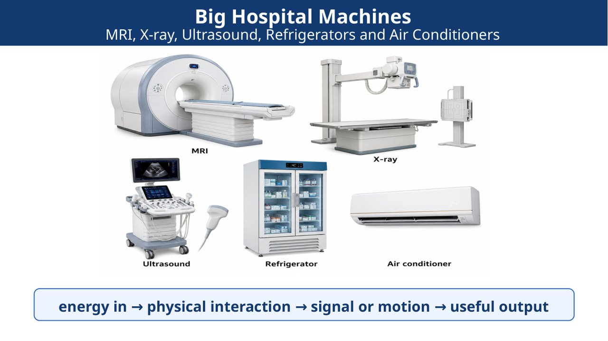
この授業では、病院で使われる大きな機械を見ます。難しく、高価で、少し怖く見えるかもしれません。しかし、それらも機械です。エネルギーを受け取り、中で物理的な作用が起こり、役に立つ結果を出します。
一番大切な考え方は、energy in → physical interaction → signal or motion → useful output です。画像診断装置では出力は画像です。冷却装置では出力は安全な温度です。非常用電源では出力は停電時の電気です。
すべての細かい技術を覚える必要はありません。基本的な物理原理を理解し、機械を魔法ではなく、段階的なシステムとして見ます。
考えて答えてください
タイトルの機械の中で、いちばん難しそうに見えるものはどれですか。
答えを見る
MRIを選ぶ学生が多いでしょう。大きく、安全ルールも厳しいからです。そこで、まずMRIから始めて、段階的に単純化します。
大きな問い：病院機械はどのように「見る・冷やす・守る」のか
物理原理を段階的に理解する。
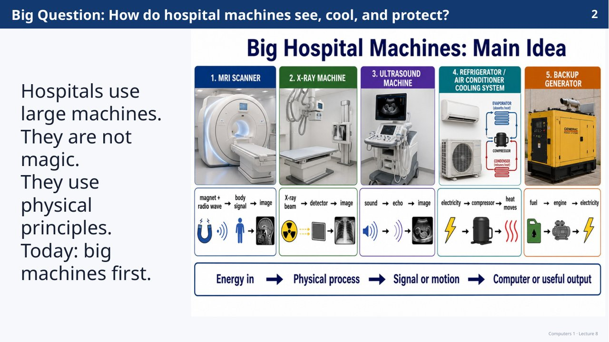
この授業では、病院機械の3つの大きな役割を見ます。体の中を見る機械、薬品や検体や部屋やコンピュータを冷やして守る機械、停電時に病院を守る機械です。
MRIは磁気、電波、体からの弱い信号、コンピュータ再構成を使います。X線は透過と吸収を使います。超音波は音波と反射を使います。冷蔵庫とエアコンは熱を別の場所へ移動させます。
まず大きくて面白い機械から始め、そのあと中の物理を見ます。
考えて答えてください
患者に直接触れないが、病院を助ける機械を1つ挙げてください。
答えを見る
例：冷蔵庫、エアコン、サーバー冷却ファン、UPS、非常用発電機。これらは病院の安全を支える重要な装置です。
考える道具：Input → Process → Output
物理原理を段階的に理解する。
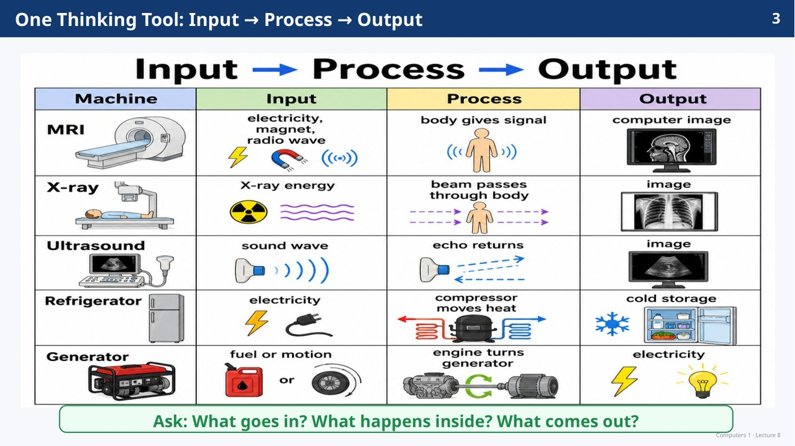
どの機械でも3つの質問をします。何が入るのか。中で何が起こるのか。何が出てくるのか。
この考え方は、当てずっぽうを防ぎます。入力、過程、出力が分かれば、機械を段階的に理解できます。
MRIでは入力は強い磁場と電波です。過程は体内の水素原子核で起こります。出力は信号、そして画像です。冷蔵庫では入力は電気、過程はコンプレッサーと冷媒、出力は冷却、つまり熱の除去です。
考えて答えてください
扇風機で考えてください。入力、過程、出力は何ですか。
答えを見る
入力：電気。過程：モーターが羽根を回す。出力：空気の流れと冷却のための風。
MRI：大きくて怖そうな機械
物理原理を段階的に理解する。
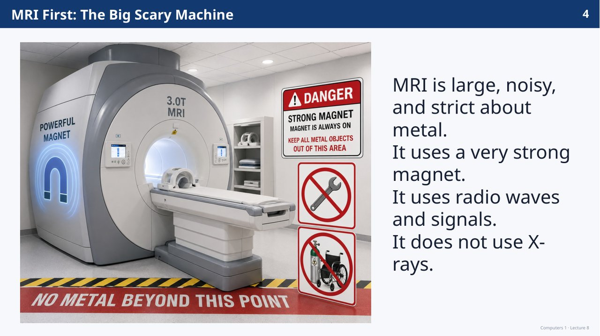
MRIは大きなトンネルのように見えます。音が大きく、高価で、金属にとても厳しい機械です。しかし基本の流れは理解できます。
MRIはとても強い磁石を使います。さらに電波、受信コイル、電子回路、コンピュータを使います。X線は使いません。これは重要な違いです。
磁石が多くの安全ルールの理由です。金属は強く引き寄せられることがあります。冷却と安定した電源も必要です。MRIは単体の箱ではなく、システムです。
考えて答えてください
MRIの近くで金属が危険なのはなぜですか。
答えを見る
MRIの磁石が非常に強く、強磁性体の金属をスキャナーの方へ強く引き寄せる可能性があるからです。
MRIの基本チェーン
物理原理を段階的に理解する。
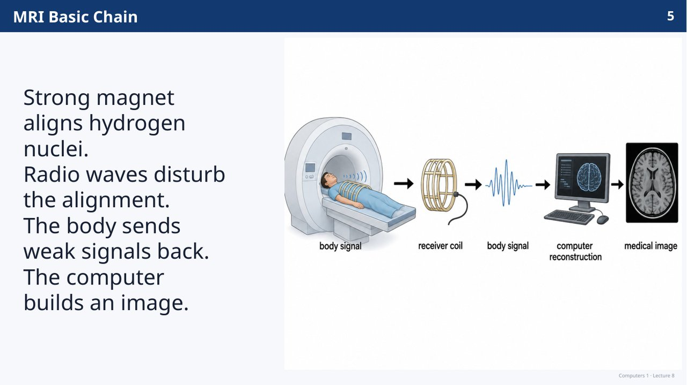
MRIの基本チェーンは、strong magnet → radio wave → body signal → computer image です。短い文ですが、深い物理が入っています。
人体には多くの水があります。水には水素原子があります。水素原子核は小さな磁石のようにふるまいます。強い磁場の中で、多くの水素原子核は磁場の向きにそろおうとします。
次にMRIは高周波パルスを送ります。それが配列を乱します。パルスが止まると、水素原子核は元の状態へ戻ろうとし、その時に弱い信号を出します。受信コイルがそれを検出し、コンピュータが画像を作ります。
考えて答えてください
MRIは主にX線を使いますか。
答えを見る
いいえ。MRIは強い磁場、高周波パルス、体からの信号、コンピュータ再構成を使います。
MRI物理原理1：強い磁場
物理原理を段階的に理解する。
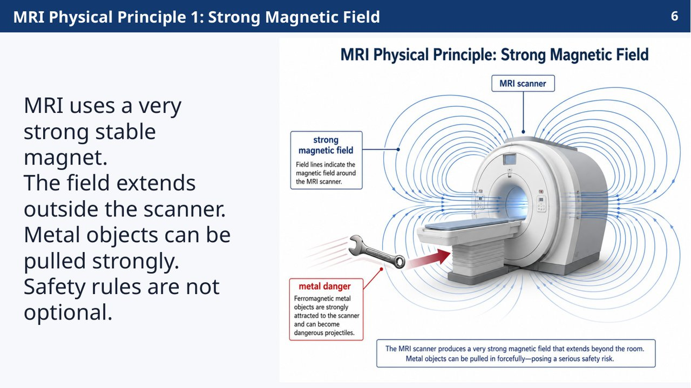
MRIは非常に強く安定した磁場を使います。この磁場は普通の磁石よりはるかに強いです。磁場は患者が入るトンネルの中だけではなく、外側にも広がることがあります。
磁場は体内の水素原子核に影響を与えます。同時に、強磁性体の金属にも強く影響します。はさみ、酸素ボンベ、工具、鍵、時計、車いすなどが危険になることがあります。
多くのMRI磁石は、検査中でなくても常に強い磁場を持っています。したがって安全ルールは任意ではありません。
考えて答えてください
MRIの磁場は何をしますか。
答えを見る
体内の多くの水素原子核をそろえ、MRI信号の出発点を作ります。
MRI物理原理2：水素の整列
物理原理を段階的に理解する。
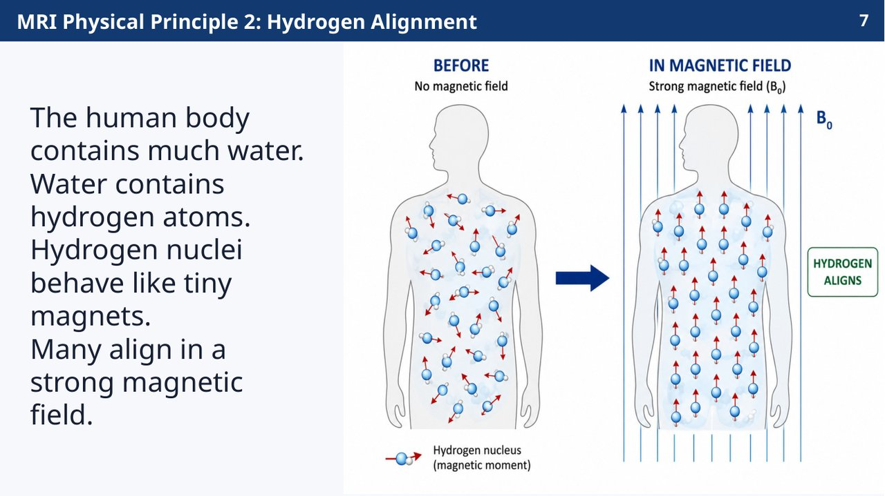
人体には多くの水があります。水分子には水素が含まれます。水素原子核はMRIで使いやすい信号源です。
MRI磁場がないと、小さな磁気の向きはよりばらばらです。強い磁場の中では、多くの水素原子核が磁場の向きにそろおうとします。これは体が目に見えて動くことではなく、原子核レベルの現象です。
この整列状態を乱し、その戻り方を測定することで、MRIは情報を得ます。
考えて答えてください
MRIで水が重要なのはなぜですか。
答えを見る
水には水素原子が含まれ、水素原子核がMRIで測定できる信号を出すからです。
MRI物理原理3：高周波パルスと戻り信号
物理原理を段階的に理解する。
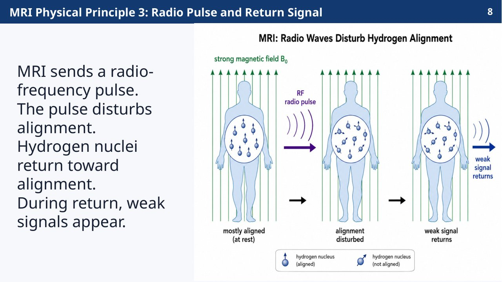
水素原子核が磁場でそろったあと、MRIは高周波パルスを送ります。このパルスはエネルギーを持ち、そろった状態を乱します。
パルスが止まると、原子核は元の整列状態へ戻ろうとします。この戻る過程で、とても弱い電磁信号が出ます。これはそのまま画像ではなく、生の物理信号です。
組織によって戻り方や信号のパターンが違います。この違いが画像のコントラストになります。
考えて答えてください
高周波パルスが止まったあと、何が起こりますか。
答えを見る
水素原子核が整列状態へ戻ろうとし、その時に弱い信号を出します。
MRI物理原理4：コンピュータが画像を作る
物理原理を段階的に理解する。
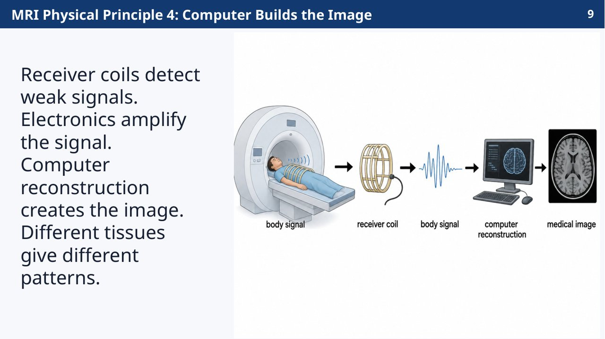
体からの信号は非常に弱いです。受信コイルが検出し、電子回路が増幅します。その後、コンピュータが信号データから画像を再構成します。
これは物理からコンピュータへの橋です。物理世界が弱い信号を出し、電子回路が変換・増幅し、コンピュータが計算して画像を作ります。
MRI画像は普通のカメラ写真ではありません。信号から計算で作られた画像です。
考えて答えてください
MRI画像は直接撮った写真ですか。
答えを見る
いいえ。体から受信した弱い信号をコンピュータが再構成した画像です。
MRIの安全と支援システム
物理原理を段階的に理解する。
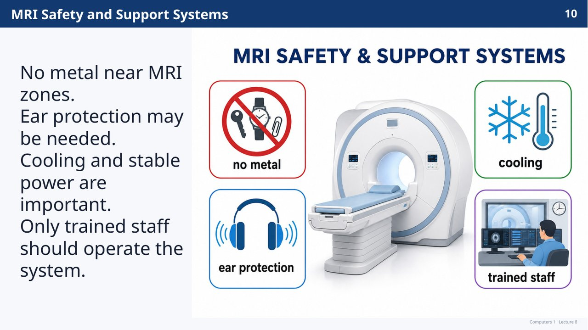
MRIの安全は1つのルールだけではありません。金属禁止、耳の保護、冷却、安定電源、入室管理などのシステムです。
撮影中はコイルが振動し、大きな音が出ることがあります。そのため耳の保護が必要なことがあります。患者や物品の確認も重要です。
医療ITスタッフとしては、警告を尊重し、安全に観察し、問題を明確に報告し、危険な推測をしないことが大切です。
考えて答えてください
MRIがうるさいことがあるのはなぜですか。
答えを見る
撮影中にコイルが速く振動し、強いノック音やブザー音のような音を出すことがあるからです。
X線：体内を見る別の方法
物理原理を段階的に理解する。
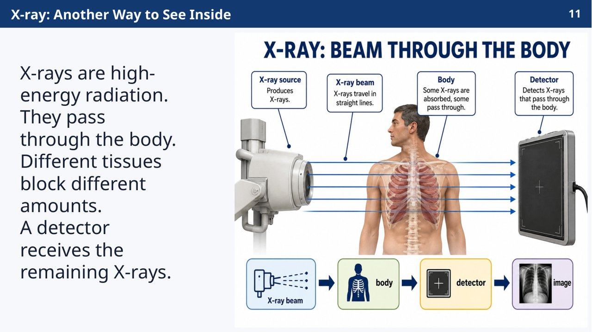
X線は体の中を見る別の方法です。MRIとは大きく違います。X線は高エネルギーの電磁放射線です。体を通過できますが、すべての組織を同じように通るわけではありません。
装置はX線ビームを体に通します。組織によって一部が吸収または遮断されます。残ったX線が検出器に届き、コンピュータが画像を作ります。
基本チェーンは、X-ray beam → body → detector → image です。
考えて答えてください
体を通ったあと、X線を受け取るものは何ですか。
答えを見る
検出器です。残ったX線を受け取り、画像作成に使います。
X線物理原理：透過と吸収
物理原理を段階的に理解する。
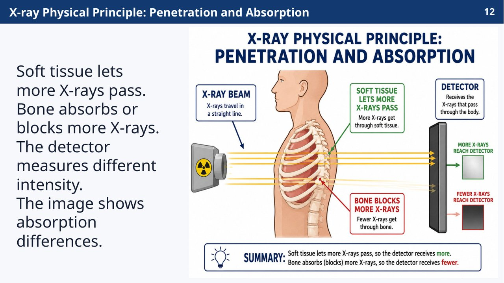
X線画像の中心原理は、透過と吸収です。軟部組織は比較的多くのX線を通します。骨はより多くのX線を吸収・遮断します。
そのため、検出器に届くX線の強さが場所によって変わります。骨の部分では届くX線が少なくなります。
コンピュータはこの強さの違いを使って、コントラストのある画像を作ります。
考えて答えてください
なぜ骨はX線画像ではっきり見えやすいのですか。
答えを見る
骨が軟部組織より多くのX線を吸収・遮断するため、検出器で大きな差が出るからです。
X線検出器と画像チェーン
物理原理を段階的に理解する。
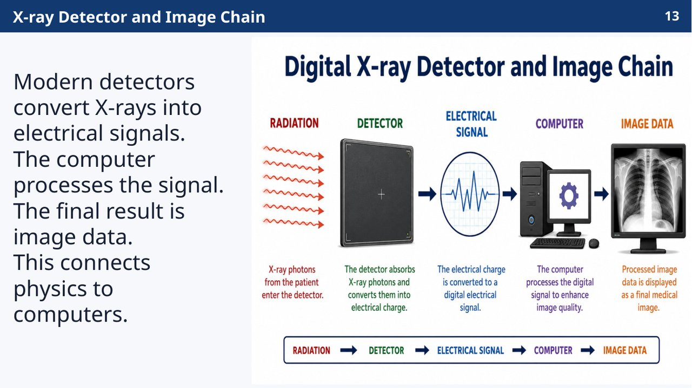
古いX線装置ではフィルムを使いました。現代の装置ではデジタル検出器を使うことが多いです。
デジタル検出器はX線エネルギーを電気信号に変換します。その信号を電子回路とコンピュータが処理し、画面上の画像データにします。
チェーンは、radiation → detector → electrical signal → computer → image data です。
考えて答えてください
現代のX線検出器は何をしますか。
答えを見る
X線エネルギーを電気信号に変換し、コンピュータが処理できるようにします。
X線安全
物理原理を段階的に理解する。
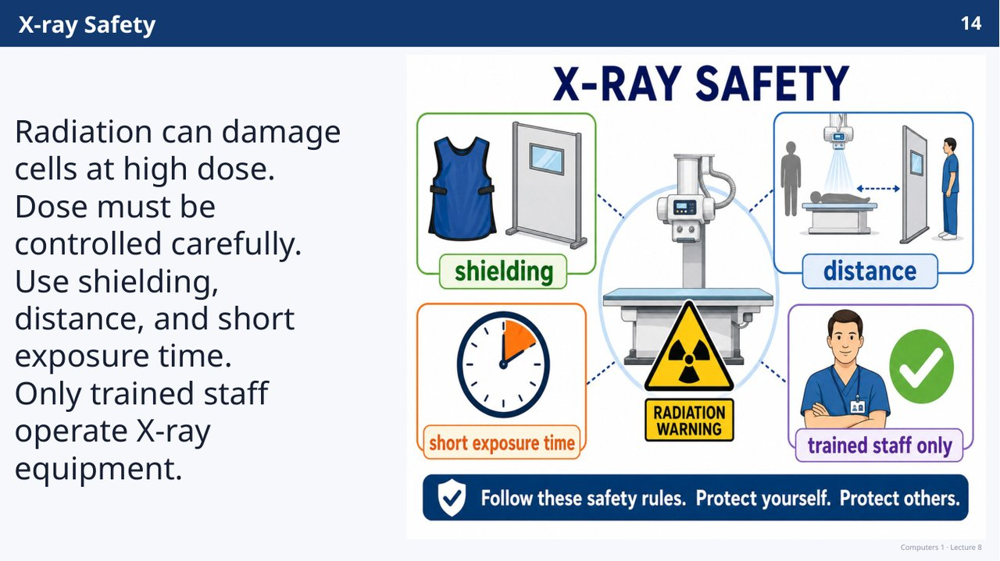
X線は診断に役立ちますが、線量が高すぎると細胞に悪影響を与える可能性があります。そのため線量管理が必要です。
簡単な安全原則は、遮へい、距離、短い照射時間です。遮へいは放射線を防ぎます。距離は被ばくを減らします。短時間は線量を減らします。
訓練を受けたスタッフだけがX線装置を操作します。医療IT学生は操作しなくても、警告表示の意味を理解する必要があります。
考えて答えてください
X線安全の原則を1つ挙げてください。
答えを見る
遮へい、距離、短い照射時間のどれかです。
超音波：音とエコー
物理原理を段階的に理解する。
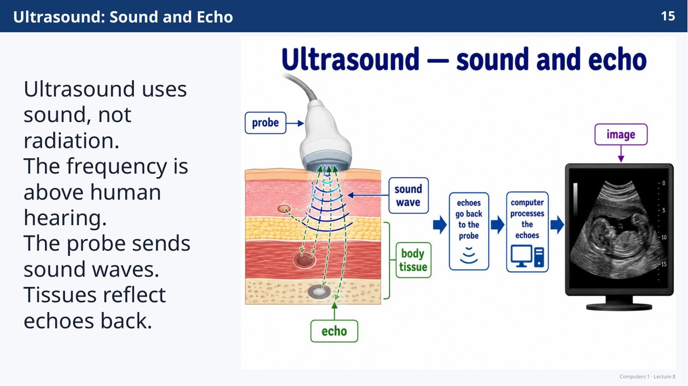
超音波はX線ではなく音波を使います。周波数は人間の耳に聞こえる範囲より高いため、私たちには聞こえません。
プローブが音波を体内に送ります。異なる組織の境界で音の一部が反射します。この反射した音をエコーと呼びます。
プローブがエコーを受け取り、システムが信号処理をして画像を作ります。
考えて答えてください
超音波はX線のような電離放射線を使いますか。
答えを見る
いいえ。高周波の音波とエコーを使います。
超音波物理原理：反射とエコー時間
物理原理を段階的に理解する。
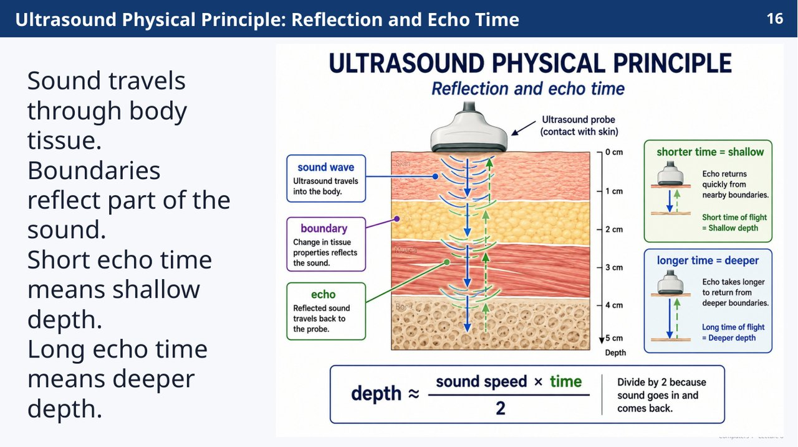
音は体内組織を進みます。組織の性質が変わる境界で、一部が反射します。装置はエコーの強さと時間を測ります。
エコーの強さは反射の強さを示します。エコー時間は深さを示します。短い時間なら浅い位置、長い時間なら深い位置です。
なぜ2で割るのか。それは音が体内へ進み、戻ってくる往復の時間を測るからです。
考えて答えてください
深い境界ほどエコー時間が長いのはなぜですか。
答えを見る
音がより長い距離を進んで戻ってくる必要があるからです。
超音波画像チェーン
物理原理を段階的に理解する。
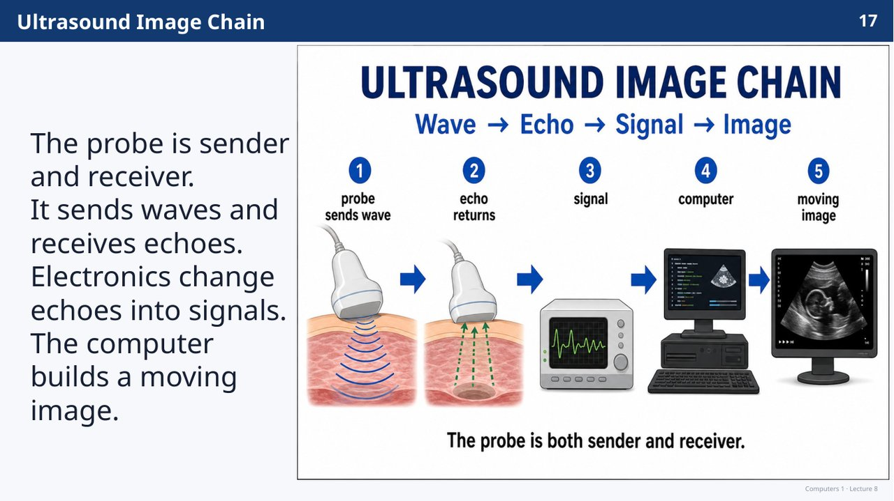
超音波プローブは送信機でもあり受信機でもあります。音波を送り、戻ってきたエコーを受け取ります。
電子回路がエコーを電気信号に変換します。コンピュータは時間と強さの情報を使って、動く画像を作ります。
リアルタイムで画像を更新できるため、動きの観察に向いています。
考えて答えてください
超音波が動く画像に向いているのはなぜですか。
答えを見る
音波の送受信を速く繰り返し、画像をリアルタイムで更新できるからです。
3つの大きな画像装置の比較
物理原理を段階的に理解する。
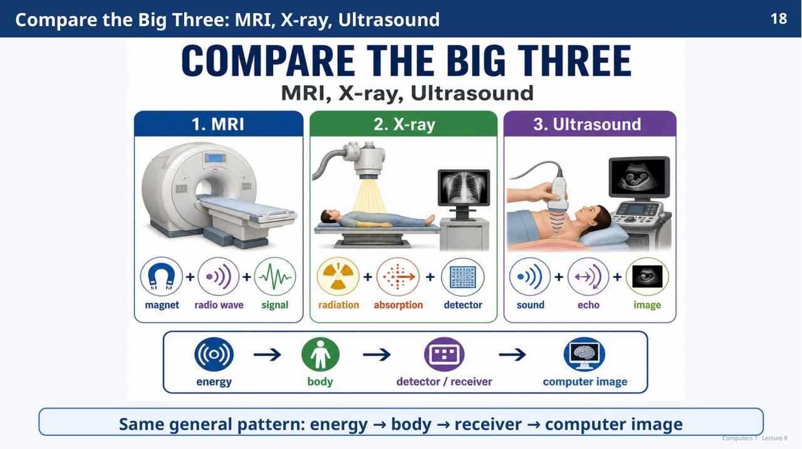
MRI、X線、超音波はすべて体内を見るための機械ですが、物理原理は違います。
MRIは磁場、電波、体からの信号を使います。X線は放射線、吸収、検出器を使います。超音波は音波、反射、エコー時間を使います。
それでも共通パターンがあります。エネルギーが体に入り、体が信号を変え、受信器が受け取り、コンピュータが画像を作ります。
考えて答えてください
音のエコーを使う機械はどれですか。
答えを見る
超音波です。
共通する画像化パターン
物理原理を段階的に理解する。
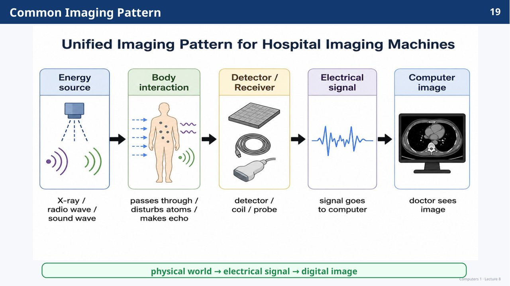
共通パターンは、physical world → electrical signal → digital image です。これは医療ITにとって非常に重要です。
まず物理的な作用があります。X線では吸収の違い、超音波では反射の違い、MRIでは体からの信号の違いです。
次に検出器や受信器が物理的な効果を電気信号に変換します。最後にコンピュータがデータを処理し、画像として表示します。
考えて答えてください
このスライドがコンピュータ学生に重要なのはなぜですか。
答えを見る
物理現象が電気信号になり、さらにデジタル画像になる流れを示しているからです。
支援設備も重要
物理原理を段階的に理解する。
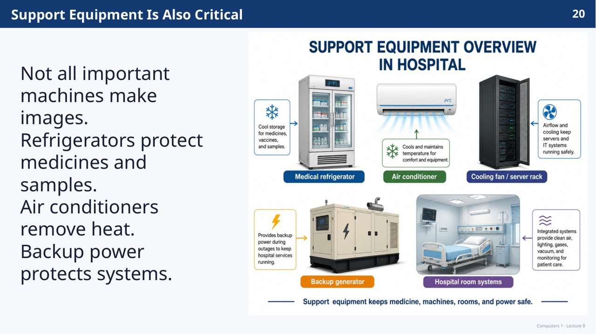
画像を作る機械だけが重要ではありません。病院では支援設備も非常に重要です。冷蔵庫は薬品やワクチンや検体を守ります。エアコンは部屋や機械から熱を取り除きます。非常用電源は停電時に重要なシステムを守ります。
これらはMRIほど派手ではありませんが、病院はこれらなしに安全に働けません。冷蔵庫の問題は薬品を傷めます。冷却の問題はサーバーや画像室を過熱させます。
つまり支援設備は贅沢ではなく、安全のためのインフラです。
考えて答えてください
なぜ病院の冷蔵庫は安全装置とも言えますか。
答えを見る
薬品、ワクチン、検体を正しい温度で守るからです。温度が間違うと品質や安全に問題が出ます。
冷蔵庫の原理：中の熱を外へ移動する
物理原理を段階的に理解する。
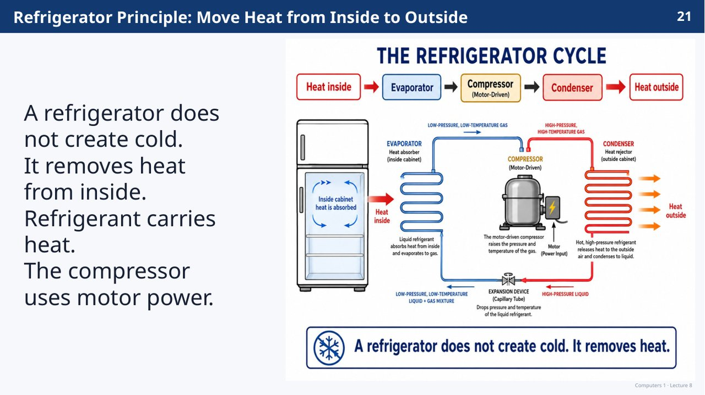
冷蔵庫は魔法のように冷たさを作るのではありません。中の熱を取り出して外へ捨てます。冷却とは熱の除去です。
冷媒は冷蔵庫内で熱を吸収します。コンプレッサーは電動モーターの力で圧力を上げます。コンデンサーでは熱を外に放出します。
これは以前の授業ともつながります。モーター、圧力、熱移動が一緒に働いています。
考えて答えてください
冷蔵庫は本当は何をしていますか。
答えを見る
中の熱を取り出し、外へ放出しています。
エアコンの原理：同じ考え方を大きな空間に使う
物理原理を段階的に理解する。
エアコンは冷蔵庫と同じ基本アイデアを使います。ただし冷やす空間が部屋になります。室内機が部屋の熱を取り出し、冷媒が熱を屋外へ運び、室外機が外へ放出します。
ファンは空気を熱交換器に通します。室内ファンは部屋の空気を冷たいコイルに通し、室外ファンは外で熱を捨てるのを助けます。
病院では、空調は快適さだけでなく、機器、薬品、サーバー、部屋の安全にも関係します。
考えて答えてください
エアコンは部屋の熱をどこへ放出しますか。
答えを見る
外へ、通常は室外機から放出します。
コンプレッサーと冷媒サイクル
物理原理を段階的に理解する。
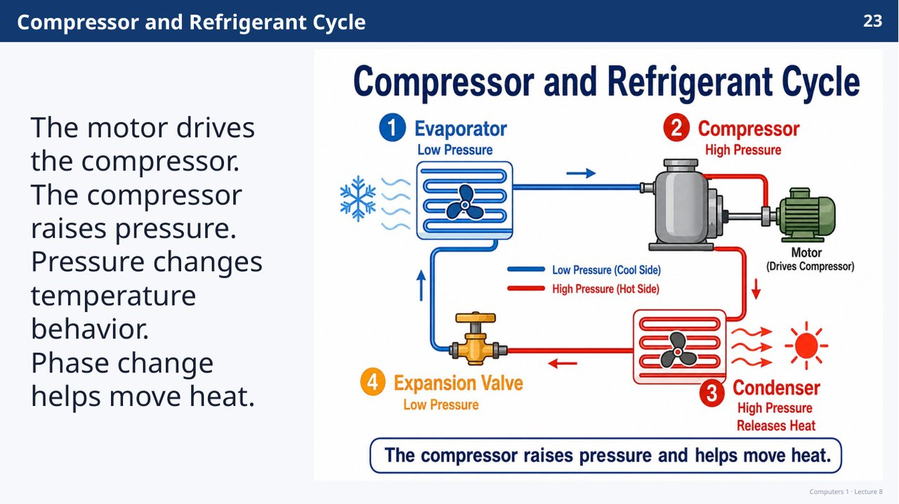
モーターがコンプレッサーを回します。コンプレッサーは冷媒の圧力を上げます。圧力が変わると温度のふるまいも変わり、熱の吸収と放出が可能になります。
蒸発器では冷媒が熱を吸収して蒸発します。凝縮器では冷媒が熱を放出して凝縮します。膨張弁は圧力を下げ、冷媒をまた蒸発器へ戻します。
中心の流れは、motor → compressor → pressure change → refrigerant phase change → heat movement です。
考えて答えてください
冷却サイクルでコンプレッサーは何をしますか。
答えを見る
冷媒の圧力を上げ、熱を移動させるサイクルを助けます。
病院で冷却が重要な理由
物理原理を段階的に理解する。
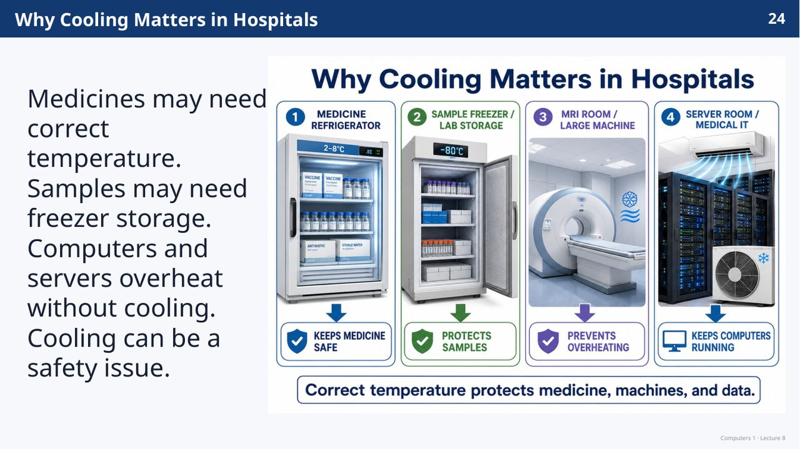
冷却は快適さだけではありません。病院では正しい温度が薬品、ワクチン、検体、コンピュータ、サーバー、画像室、大型機械を守ります。
薬品には適切な温度範囲が必要です。検体は冷蔵または冷凍保存が必要なことがあります。コンピュータやサーバーは空気の流れと冷却なしでは過熱します。
冷却の失敗は、単なる不快さではなく、医療安全の問題になることがあります。
考えて答えてください
サーバー室の冷却が止まると何が起きますか。
答えを見る
サーバーが過熱し、病院ITシステムが不安定になったり停止したりする可能性があります。
非常用電源：主電源が止まったとき
物理原理を段階的に理解する。
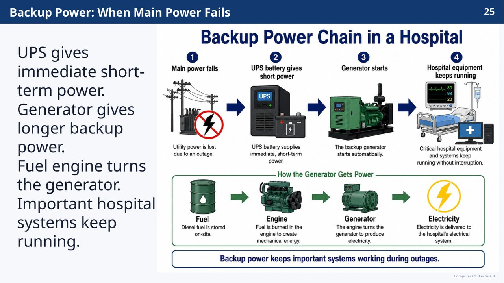
病院は常に電力を必要とします。主電源が止まったとき、一部のシステムは止まってはいけません。UPSはバッテリーからすぐに短時間の電力を供給します。
非常用発電機はより長いバックアップ電力を供給します。多くの場合、燃料エンジンが発電機を回し、発電機が電気を作ります。
これはLecture 6とLecture 7をつなげます。熱機関が回転を作り、発電機が回転を電気に変えます。
考えて答えてください
UPSと発電機の違いは何ですか。
答えを見る
UPSはすぐに短時間のバッテリー電力を出します。発電機は起動後により長いバックアップ電力を出します。
よくある故障タイプ
物理原理を段階的に理解する。
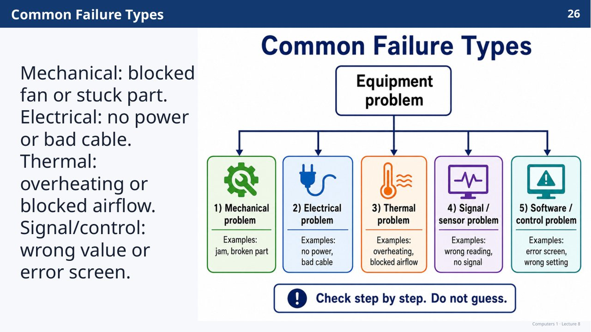
機器が動かないとき、適当に推測しないでください。物理システムで考えます。機械的問題は、ファンの詰まり、ベルト切れ、紙詰まり、動く部品の固着などです。
電気的問題は、電源なし、ケーブル不良、プラグ損傷、ヒューズ切れ、接続不良などです。熱的問題は、過熱、空気の流れの不足、汚れたフィルター、冷却不良などです。
信号・制御の問題は、センサー値の異常、アラーム、エラー画面、設定問題、通信問題などです。分類すると報告が明確になります。
考えて答えてください
機器が熱く、通風口がふさがっています。どの分類ですか。
答えを見る
熱的問題です。さらに空気の流れが止まっているので、機械的な詰まりも関係する可能性があります。
医療ITスタッフがすべきこと
物理原理を段階的に理解する。
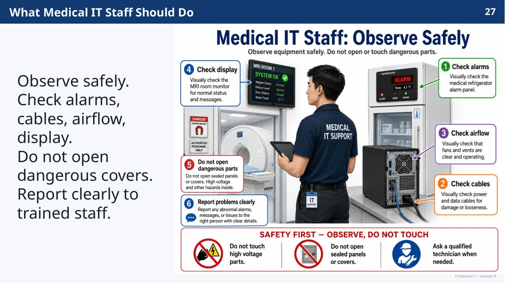
医療ITスタッフは大きな装置を謎の箱として扱う必要はありません。安全に観察し、アラーム、ケーブル、通気、画面表示、部屋の状態、明らかな異常を確認します。
危険なカバーを開けてはいけません。高電圧部に触れてはいけません。許可なくMRIや放射線区域に入ってはいけません。重要な医療システムを安易にリセットしてはいけません。
よいサポートとは、何が起きたか、いつ起きたか、どんなアラームが出たか、音や熱はあったか、安全に何を確認したかを明確に報告することです。
考えて答えてください
原因を推測するのと、見えた事実を明確に報告するのでは、どちらが安全ですか。
答えを見る
見えた事実を明確に報告する方が安全です。
練習：Input → Process → Output
物理原理を段階的に理解する。
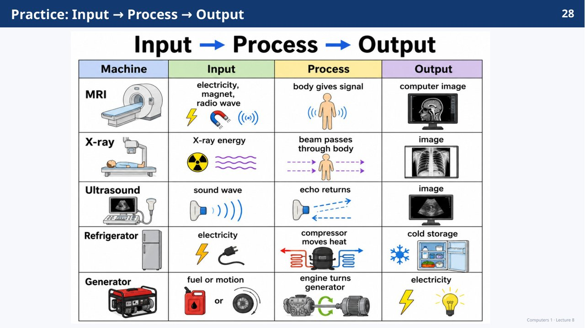
考える道具を使います。機械を1つ選び、入力、過程、出力、起こりうる故障を書きます。
MRIなら、入力は強い磁場と高周波パルスです。過程は体が弱い信号を出すことです。出力はコンピュータ画像です。故障例は金属安全、冷却、信号、電源の問題です。
冷蔵庫なら、入力は電気です。過程はコンプレッサーと冷媒が熱を移動することです。出力は冷蔵保存です。故障例は電源、コンプレッサー、汚れたコンデンサー、ドアパッキン、温度アラームです。
考えて答えてください
超音波を選びます。入力、過程、出力は何ですか。
答えを見る
入力：音波。過程：組織がエコーを反射し、プローブが受け取る。出力：動く画像。
ミニクイズ
物理原理を段階的に理解する。
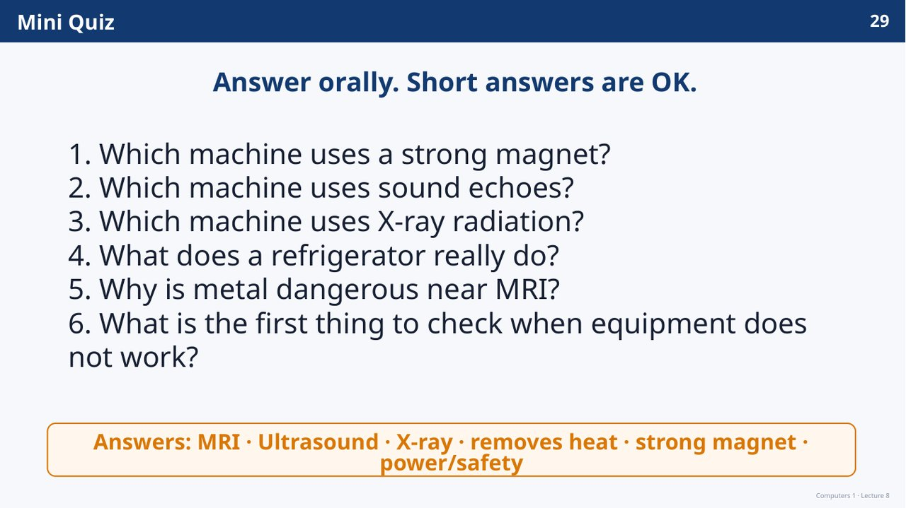
短く答えてください。1語または短いフレーズで大丈夫です。
強い磁石を使う機械はどれですか。音のエコーを使う機械はどれですか。X線放射を使う機械はどれですか。冷蔵庫は本当は何をしますか。なぜMRIの近くで金属は危険ですか。機器が動かないとき最初に確認することは何ですか。
これらは授業の中心原理を確認する質問です。
考えて答えてください
クイズを解いてから答えを開いてください。
答えを見る
1. MRI。2. 超音波。3. X線。4. 熱を取り除く。5. 強い磁石が金属を引き寄せるから。6. 電源と安全をまず確認する。
大きな病院機械の安全ルール
物理原理を段階的に理解する。
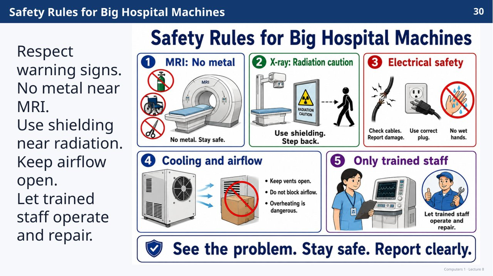
大きな病院機械には敬意が必要です。警告表示は飾りではありません。安全システムの一部です。
MRIの近くに金属を持ち込まない。放射線機器では遮へいと距離を守る。冷却機器やコンピュータの通風をふさがない。高電圧部に触れない。
危険な機器の操作や修理は訓練されたスタッフに任せます。学生や医療ITサポートの役割は、安全に理解し、観察し、明確に報告することです。
考えて答えてください
通風をふさぐとなぜ危険ですか。
答えを見る
過熱、機器停止、故障、安全問題につながる可能性があるからです。
まとめ：大きな機械、単純な原理
物理原理を段階的に理解する。
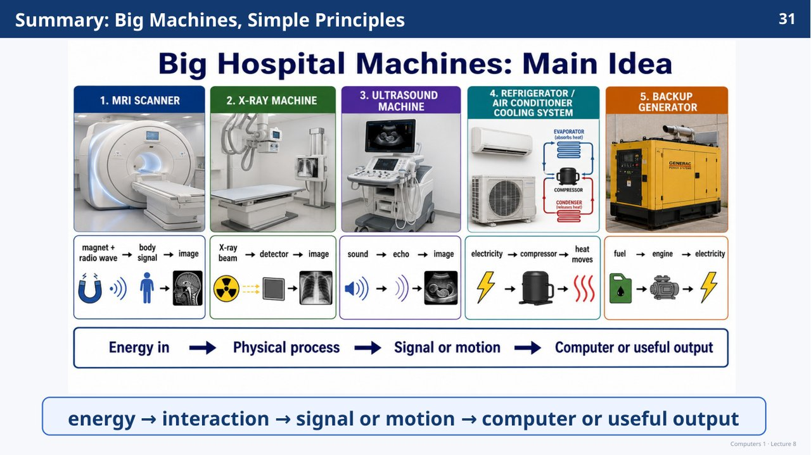
今日は大きな機械を学びましたが、原理は段階的でした。MRIは強い磁場、電波、体からの信号、受信コイル、コンピュータ処理を使います。X線は透過、吸収、検出器、画像データを使います。超音波は音波、エコー、信号処理、動く画像を使います。
冷却機械は熱を別の場所へ移動します。非常用電源は燃料、エンジン回転、発電機、電気をつなげます。
最終チェーンは、energy → interaction → signal or motion → computer or useful output です。大きな病院機械は魔法ではなく、物理ステップの連鎖です。
考えて答えてください
この授業の多くの機械に共通するチェーンは何ですか。
答えを見る
Energy in → physical interaction/process → signal or motion → computer image or useful output です。
最終活動：チェーンを見つける
物理原理を段階的に理解する。
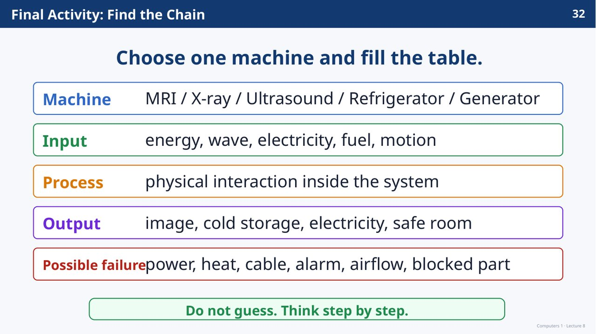
MRI、X線、超音波、冷蔵庫、発電機の中から1つ選びます。入力、物理過程、出力、起こりうる故障を書きます。
これは暗記のためだけではありません。工学的に考える訓練です。推測しないでください。段階的に考え、チェーンを見つけます。
チェーンを見つけられれば、機械をより明確に説明できます。将来、医療ITの現場で問題を報告するときにも役立ちます。
考えて答えてください
発電機を選びます。入力、過程、出力、故障例を答えてください。
答えを見る
入力：燃料または回転。過程：エンジンが発電機を回す。出力：電気。故障例：燃料なし、エンジン問題、発電機問題、ケーブル問題、過負荷、アラーム。